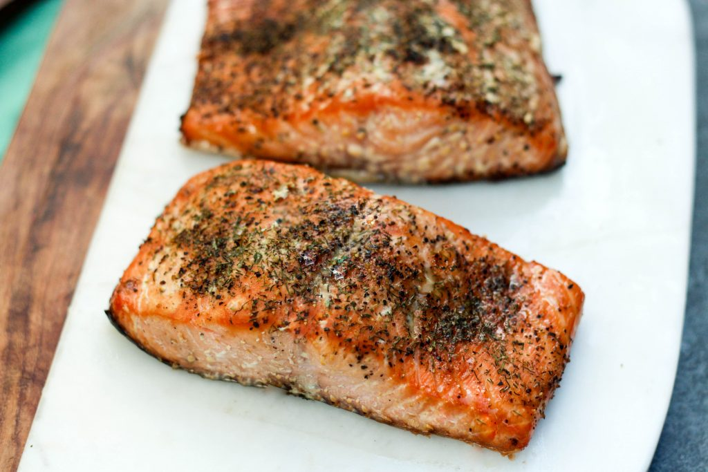

SMOKED SALMON
Western Dish (Canada)

Takes 12 hours
Makes 4 servings
MAIN DISH
Ingredients
- 1 cup kosher salt
- 1/2 cup sugar
- 1/2 cup dark brown sugar
- 1 tablespoon crushed black peppercorns
- 2 large salmon fillets or sides, pin bones removed
Instruction
- 1. In a bowl, mix together salt, sugar, brown sugar and peppercorns. Spread extra-wide aluminum foil a little longer than the length of the fish and top with an equally long layer of plastic wrap.
- 2. Sprinkle 1/3 of the rub onto the plastic. Lay 1 side of the fish skin down onto the rub. Sprinkle 1/3 of the rub onto the flesh of the salmon. Place second side of salmon, flesh down onto the first side. Use the remaining rub to cover the skin on the top piece.
- 3. Fold plastic over to cover then close edges of foil together and crimp tightly around the fish. Place wrapped fish onto a plank or sheet pan and top with another plank or pan. Weigh with a heavy phone book or a brick or two and refrigerate for 12 hours. Flip the fish over and refrigerate another 12 hours.
- 4. Unwrap fish and rinse off the cure with cold water. Pat salmon with paper towels then place in a cool, dry place (not the refrigerator) until the surface of the fish is dry and matte-like, 1 to 3 hours depending on humidity.
- 5. A fan may be used to speed the process. Smoke fish (see Note) over smoldering hardwood chips or sawdust, keeping the temperature inside the smoker between 150 degrees F and 160 degrees F until the thickest part of the fish registers 150 degrees.
- 6. erve immediately or cool to room temperature, wrap tightly and refrigerate for up to 3 days. Cook's Note: Trout, mackerel, and bluefish also smoke well.
SOURCE : www.foodnetwork.com
Add to Cart
want to try this recipe? order ingredients now!